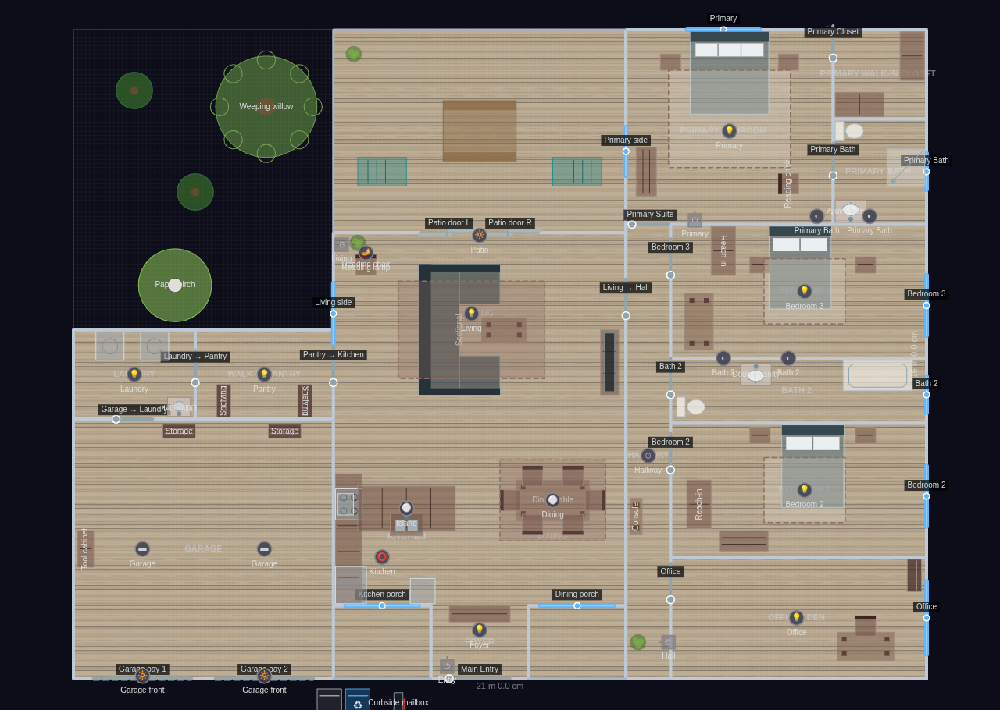
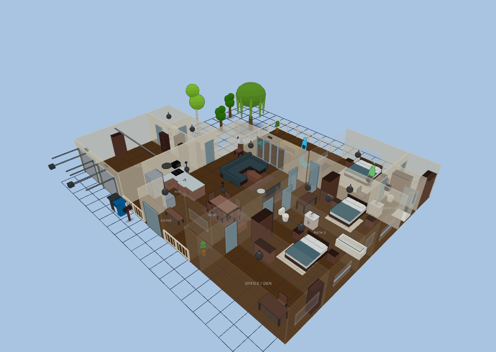
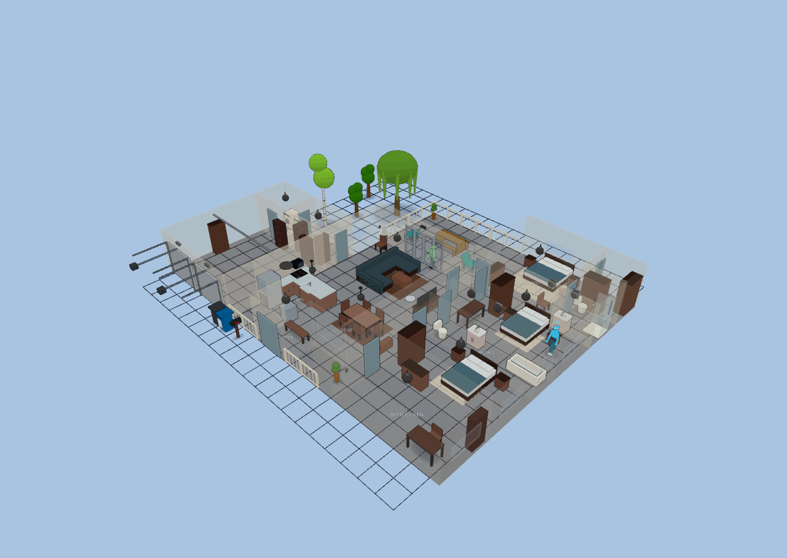

Open-Concept Modern
Explore it live above, or import the JSON in Diorama under Settings ▸ Data ▸ Configurations ▸ Import.
~2,205 sq ft (204 m²) heated + 441 sq ft garage · 1 floor · 15 rooms
A wide, shallow-U modern-farmhouse: an attached two-car garage + laundry/pantry
utility block on the west end, a wide-open great room (kitchen + dining + living
under one volume, no interior partitions) in the center with sightlines straight
from the recessed entry porch through to the covered rear patio, and a private
bedroom wing on the east — office and two secondary bedrooms up front, the primary
suite tucked at the quiet back corner off a corridor spine. Light white-oak floors
run the great room + hallway + office; bedrooms read as warm greige carpet; wet
rooms tile. The unbuilt side yard and open porch/patio render as bare ground.
Garage: two storage bookshelves + a tool cabinet; twin LED strips, garage-door floods.
Laundry: side-by-side washer + dryer and a utility sink.
Walk-in Pantry: two shelving runs off the kitchen.
Foyer: entry bench beside the double front door.
Kitchen: west-wall galley (counter run, fridge, stove, over-range microwave,
dishwasher) plus a 2,400 mm island with a sink; island pendant + ceiling light.
Dining: six-seat table on a rug, pendant overhead, porch window.
Living: U-sectional facing a TV on a media stand, coffee table, reading chair +
plant by the patio doors, large rug; ceiling light + reading lamp.
Hallway: slim console + plant along the bedroom-wing spine; recessed light.
Office / Den: desk + chair and a corner bookshelf.
Bedroom 2: queen bed, two nightstands, dresser, reach-in wardrobe, carpet rug.
Bath 2 (shared): toilet, double vanity, tub/shower combo; sconce pair.
Bedroom 3: queen bed, two nightstands, study desk, reach-in wardrobe, carpet rug.
Primary Bedroom: king bed under the back picture window, two nightstands, dresser,
reading chair, carpet rug.
Primary Bath: double vanity, toilet, walk-in shower; sconce pair.
Primary Walk-in Closet: two built-in wardrobe runs.
Patio / Yard: picnic table + lawn chairs on the covered patio behind a 3 m
two-panel sliding-glass wall, side-yard trees with a mature weeping willow and
a paper birch in the deep west yard, curbside trash + recycle bins and a
mailbox at the front.
Main Floor
15 rooms · 336 m² footprint


Glass-house overview
